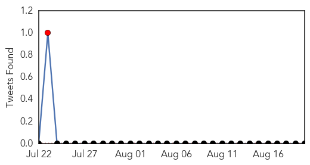
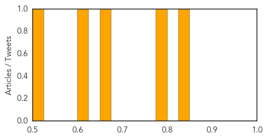
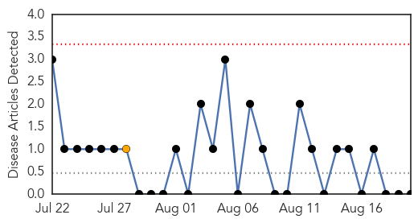

Hepatitis
30-Day Web Trend
4 alerts, 6 warnings

30-Day Twitter Trend
1 alerts, 0 warnings

Article Locations

Article Confidences
Top Articles:
- 0.847
- FDA approves breakthrough hepatitis C drug
- 0.779
- Maximizing Health, Minimizing Harm: The Role of Public Health Programs in Drug User Health
- 0.659
- Local Health Officials Worried Over Spike in Hepatitis C Cases
- 0.623
- Pennsylvania Department of Health Reminds Parents It's Easy to Keep Children Healthy by Immunizing Them before They Return to School
- 0.520
- Mandated vaccination clinic next Thursday
Top Tweets:
-
No tweets found for Aug 20, 2015
Mold/Fungal
30-Day Web Trend
0 alerts, 1 warnings

30-Day Twitter Trend
0 alerts, 0 warnings

Article Locations

Article Confidences

Top Articles:
-
No articles found for Aug 20, 2015
Top Tweets:
-
No tweets found for Aug 20, 2015